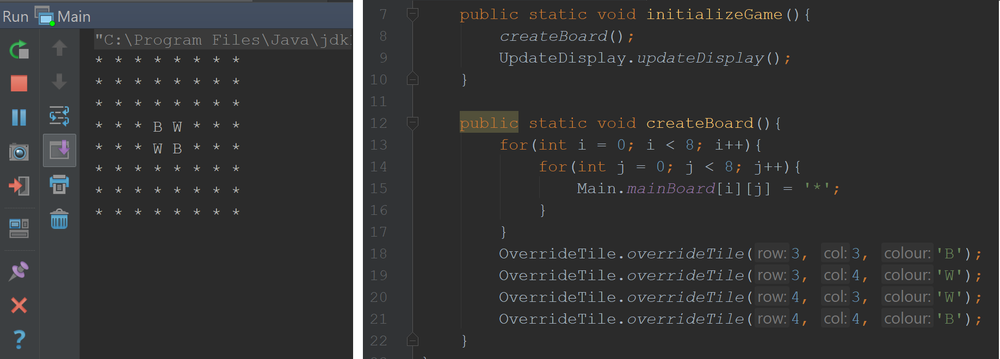

Date Created: June 12, 2018
Programming Languages and Techniques Used:
For a Grade 12 final project, I recreated the game of Othello (Also known as Reversi). It started with the algorithms to simulate the game in the console output using simple key commands. Afterwards, I integrated JavaFX for user-friendly controls and then I added computer bots to play single player using mulitple difficulty levels.
The board is represented as an 8x8 2D array, showed above left. A black piece is denoted by a 'B', a white piece by 'W', and an empty tile by '*'. The game is initialized by creating an empty board and overwriting the middle 4 tiles with the appropriate tiles. The algorithms are carried out user helper functions which:
I integrated a UI using the JavaFX library. Each tile is a button which calls the algorithm helper functions to perform a move, if legal. At the bottom of the screen is a self-updating scoreboard display which shows how many tiles each player has on the board and a red dot indicating which player's turn it is.